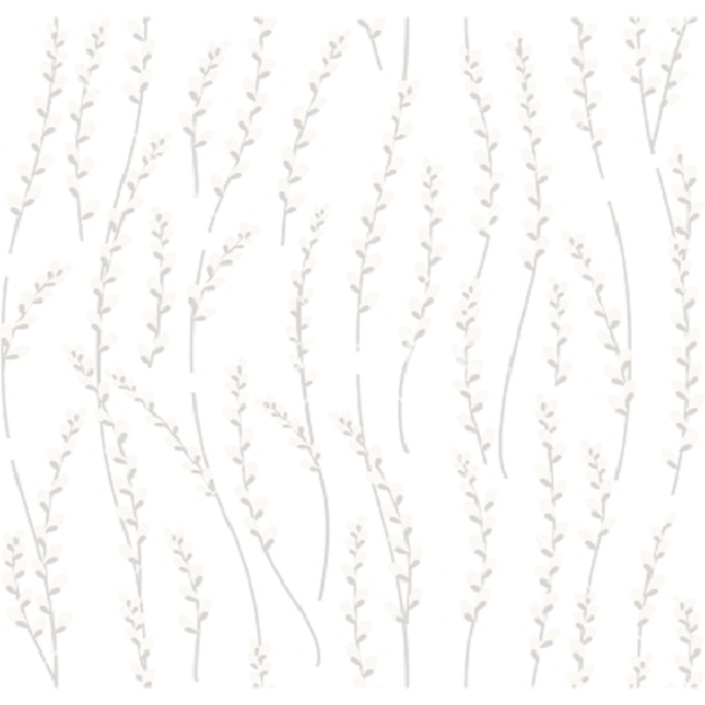
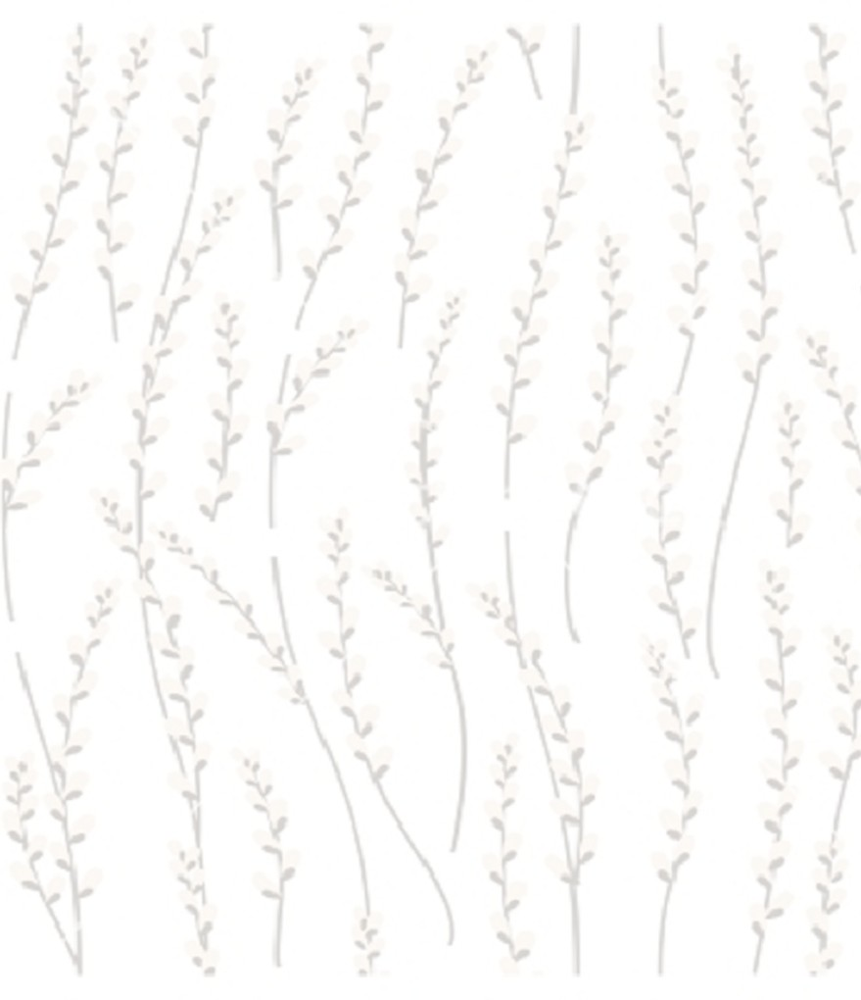
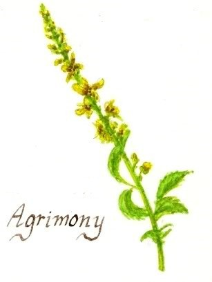

Agrimony 龍牙草
Agrimonia eupatoria
科│薔薇科 Rosaceae
屬│龍牙草屬 Agrimonia
種│龍牙草 A.eupatoria
--------------------------------------------
別名│狼牙草
--------------------------------------------
魔法屬性│水星/木星/風元素
--------------------------------------------
食用危險指數│★★
魔法用途 Magick
保護、睡眠
魔法傳說 Lord
把龍牙草放在成年男子的頭頂上，可以治療他的失眠，讓他一夜好眠。
使用禁忌 Warning
不可以給有便秘症狀的人使用。製成藥膏塗抹可能會刺激皮膚。
功能 Effect
癒合
龍牙草具有修補傷口的效果，用來止血效果也是相當顯著。
使用部位 Parts used
葉
常見使用方法 Uses
乾燥後泡茶、萃取、打粉做成錠狀藥片、酊劑


